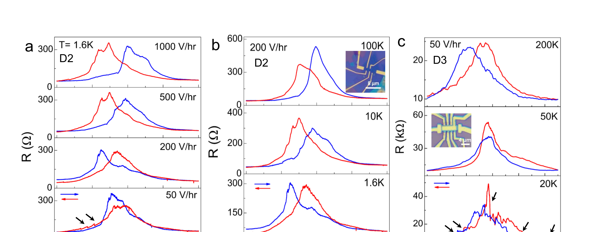
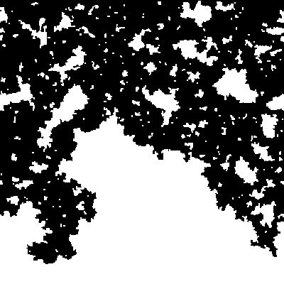

“随机场” 到底随机了什么？RFIM 又比一条弹性畴壁多了什么？
上一章已经把退钉扎当作临界现象来读。但要谈普适性，必须先回答更底层的问题：无序是改局域势垒、偏爱某个极化方向，还是直接作用在离散序参量上？更重要的是——畴壁还能不能被压缩成一条单值弹性线？
权威来源：本章三篇核心论文均来自项目 Google Drive · `03 Depinning, elastic-interface, RFIM theory`。论文图只取项目项目 Drive PDF 自身；Drossel Fig.3(a) 的 PDF 内嵌对象本身只有 400×400、1-bit，因此直接无损提取原对象，不做“600 DPI 放大”。
0 · 先拆掉最容易混淆的三个词
这里研究对象已经是一条/一张界面 u(x)。RB 与 RF 是粗粒化钉扎无序的统计类别：它们描述随机势或随机力沿界面位移方向怎样相关。
关键词：界面已先被定义；通常默认单值、弹性界面描述有效。
随机变量 hi 直接耦合到局域伊辛序参量 Si。畴壁不是基本自由度，而是许多自旋的边界涌现出来。
后果：界面可以产生悬垂、封闭封闭小畴、分叉/并合；这些结构并不天然存在于单值弹性线。
研究桥接 · 真实滑移铁电里的无序到底是什么？
到这里必须把“模型里的随机场 / 随机键”和“样品里的缺陷”分开。2026 年 Paul 等研究 CVD 生长 3R-WSe₂：生长诱导的结构无序会显著影响极化翻转；多畴动力学又会单独改变滞回的演化。更具体地，作者比较的器件中还能看到与 Se 空位相关的陷阱动力学、不同畴的矫顽场分散、慢扫场下的畴松弛与部分回切。真实样品因此不是只有一个名叫 σ 的随机数。
We show that the growth-induced structural disorder significantly impacts polarization switching, while multi-domain kinetics governs the evolution of the FE response.
Paul 等在 CVD 生长的 3R-WSe₂ 中强调两类效应：生长过程中形成的结构无序会显著改变极化翻转，而多畴动力学又会独立影响铁电响应随循环和时间的演化。它提醒我们，真实器件里的“无序”往往同时包含结构缺陷、陷阱电荷和多畴初态，不能直接等同于模型里的某一个随机场参数。

D2 在低温慢扫时出现由畴松弛 / 部分回切关联的异常响应；D3 的多次电阻跳变与更强 Se-vacancy 陷阱动力学又叠在多畴翻转上。这里最该学的是：不同物理来源可以同时投影到同一条宏观回线。
| 真实来源 | 粗粒化候选效应 | 不能直接偷换成 |
|---|---|---|
| 陷阱电荷 / 带电缺陷 | 局域偏置（RF-like）+ 随时间变化的电荷俘获 / 迁移率 | “因此就是静态 Gaussian RF” |
| 应变 / 结构缺陷 / 封闭小畴 / 边缘 | 势垒、畴壁能量、弹性、几何或迁移率的空间变化 | “因此一定是 RB” |
| 多畴初始结构 | 初始拓扑、畴壁总体、阈值分布、弛豫路径 | 一个局域无序场 |
| 扩展 / 团簇缺陷 | 有限相关长度 ξd、各向异性、稀有强钉扎中心 | δ 相关白噪声 |
1 · Dahmen & Sethna 1996：无序不是“加点噪声”，它能改变整个翻转形态
这一篇先不追单条畴壁，而是问一个更宏观的问题：当淬火随机场的强度 R 相对相互作用 J 改变时，缓慢扫外场得到的滞回会发生什么？答案是：低无序时一个雪崩可以横跨系统，产生宏观跳变；高无序时局域阈值被摊开，曲线变平滑；两者之间存在无序诱导临界点。
Tuning the amount of disorder in the system we find a second-order critical point with an associated diverging length scale, measuring the spatial extent of the avalanches of spin flips. A power-law distribution with avalanches of all sizes is seen only at the critical value of the disorder. However, our numerical simulations indicate that the critical region is remarkably large.
A simple way to implement a certain kind of uncorrelated, quenched disorder is by introducing uncorrelated random fields into the model. In magnets the random fields might model frozen-in magnetic clusters with net magnetic moments that remain fixed even if the surrounding spins change their orientation. In contrast to random anisotropies they break time-reversal invariance by coupling to the order parameter (rather than its square).
ℋ = − Σ⟨ij⟩ Jijsisj − Σi(H+fi)si
Dahmen 与 Sethna 研究的是零温非平衡 RFIM。随着随机场强度增加，体系从一次大雪崩造成的宏观跳变，逐渐过渡到许多分散的小事件；两者之间存在无序诱导临界点。真正的全尺度雪崩幂律只在临界无序处成立，而临界附近有限尺度数据也可能看起来近似幂律。
作者真正证明了什么
在零温、非平衡 RFIM 的慢驱动动力学中，作者用 RG、均值场与数值结果建立无序诱导临界性：临界无序附近出现发散尺度、雪崩标度与普适临界行为。
作者没有证明什么
这不是铁电翻转的材料专属模型；也没有证明真实器件中的每一种缺陷都等价于随机场。把浓度波动、应变、电荷陷阱等映射成 hi 需要额外物理依据。
1.5 · 雪崩统计：先定义事件，再问幂律
Dahmen–Sethna 的 RFIM 里，雪崩是准静态增加驱动后，从一个亚稳态到下一个亚稳态的集体响应；实验或连续时间模拟里，我们却常从一条含噪活动度时间序列用幅度阈值、dead time（死时间） 或带宽 “切”出突发事件。这两种事件定义不是自动等价。
驱动方案本身定义事件边界：一次无穷小 / 准静态驱动增量触发的完整集体弛豫。适合理论退钉扎 / RFIM。
从 dP/dt、速度、电流或图像活动度中按阈值 / 间隔规则分段。事件数量、大小、持续时间都可能随事件检测器改变。
幂律是候选，不是结论
Dahmen & Sethna 1996 的关键提醒是：其模型中真正的全尺度临界幂律出现在临界无序；但临界区可以很宽，所以离临界点并不很近的数据也可能在有限动态范围里“像”幂律。因此数个数量级的直线本身不能定位临界点。
最低统计要求
不要对对数分箱直方图做普通普通最小二乘就宣布 τ。至少明确下截止、有限尺寸 / 检测上截止，用基于似然的指数估计与拟合优度，并比较合理的替代分布。
更强的普适性检验
如果事件量足够，除了事件大小 / 持续时间指数，还可测试事件大小–持续时间关系、截止尺度标度与固定持续时间下的平均雪崩形状 / 标度函数。Papanikolaou 2011 的方法论价值就在于“beyond power laws”。
真正的 n 是什么？先画统计层级
| 层级 | 是什么 | 能不能直接当独立 n |
|---|---|---|
| quenched 无序样本 / device | 独立无序景观、device 或独立空间无序样本 | 通常是跨样本 uncertainty 的外层 unit |
| 雪崩事件 | 同一无序样本内按固定方案定义的事件 | 可估条件事件 distribution；跨样本推断前先检查相关性/分层 |
| 时间分箱 / 帧 / 像素 | 一个事件或轨迹的测量采样 | 不是新的雪崩，也不是新的无序样本 |
| 自助法抽样 | 不确定性计算产生的重采样 | 绝不是物理 n |
2 · Drossel & Dahmen 1998：一旦 RFIM 的墙开始“长枝杈”，单值界面就可能失效
这篇对我们的主线特别关键。作者研究二维零温 RFIM 中的一堵受驱畴壁。强无序时，界面不是整齐推进，而是沿有利随机场路径呈 percolation-like（类渗流）推进；即使无序变弱，二维长尺度下仍可能出现 self-similar（自相似）行为。这里第一次非常直观地看到：“畴壁”未必还能写成一个 h(y)。
In the self-affine regime, which was seen in 3-dimensional simulations with bounded and Gaussian distribution of random fields, neighbouring interface segments proceed coherently, and the interface has a roughness exponent smaller than one. Overhangs and “bubbles” (i.e., uninvaded domains left behind by the advancing interface) occur only below a certain length scale and can therefore be neglected on long length scales, where the interface can be described by a single-valued function.
For strong disorder, the invading phase advances in a percolation-like manner, following routes of particularly high random field values. When the driving force is at the depinning threshold, the invading phase penetrates only a vanishing volume fraction of the invaded medium, just as a spanning cluster in percolation theory.
Drossel 与 Dahmen 直接展示了 RFIM 畴壁为何可能超出“单值弹性线”描述：强无序下界面会沿有利随机场路径长出悬垂和封闭小畴，并呈现渗流式推进。因此，在二维 RFIM 中，先验证畴壁还能否写成 h(y)，比直接套用弹性线粗糙度指数更重要。

黑色是侵入区域。注意白色未翻转区域被留在已侵入区域内部：这就是封闭小畴 / 多连通几何的直观版本。该 PDF 的原始 Figure 对象本身是 400×400、1-bit 图，本页直接无损提取，未做放大伪高清。
作者真正证明了什么
针对其二维 RFIM、零温、特定推进规则，作者给出数值结果与标度论证，支持任意非零高斯无序在足够长尺度、足够靠近退钉扎时趋向类渗流行为，并讨论 ζ=1、df=4/3 等特征。
作者没有证明什么
它没有证明所有二维畴壁都属于渗流普适性。作者自己强调 lower critical dimension（下临界维数） 与交叉区的判断依赖模型、无序分布和尺度；更不能直接把这里的 β=5/36 当成滑移铁电的答案。
3 · Zhou, Zheng & He：悬垂会直接污染你以为在测的 ζ
项目 Drive 中这份 PDF 是该作者组对二维受驱 RFIM 的后续 arXiv 版本，延续其 2009 PRB 的短时畴壁研究。它的价值不是再给一个退钉扎阈值，而是把 RFIM 与 QEW 的差别指向一个具体几何来源：悬垂。作者发现全局粗糙度与局域粗糙度不再表现为 QEW 的简单 super-rough scaling（超粗糙标度），而出现 intrinsic anomalous scaling（本征异常标度）/ spatial multiscaling（空间多重标度）。
In summary, with Monte Carlo simulation we have investigated the non-equilibrium critical dynamics of the two-dimensional driven random-field Ising model for the depinning transition and its background at zero temperature. The dynamic scaling behavior is carefully analyzed, and a dynamic roughening process is observed. The transition point and critical exponents are totally listed in Table I. Based on the short-time dynamics, it is more convenient and precise to measure these exponents than the work in the steady state close to the depinning transition.
The conjecture that the motion of a domain wall in a random-field system can be described by the equation EW with quenched disorder is in doubt here. And intrinsic anomalous scaling and spatial multiscaling are observed in the interface growth process of our work, quite different from the superrough scaling and spatial single scaling in QEW. When the overhangs vanish with the large driving field, the difference between these two models disappears. Hence, we conjecture that overhangs lead to the main difference between QEW and RFIM at the depinning transition.
Zhou、Zheng 与 He 在二维受驱 RFIM 中观察到短时退钉扎标度、动态粗糙化以及异常 / 多重标度。作者把悬垂视为 RFIM 与 QEW 行为差异的重要来源之一。对我们而言，这一结果主要提供“界面映射可能失效”的诊断，而不是提供一个可以直接搬到滑移铁电的指数。

(a) 无序诱导粗糙度 Dω²(t) 与无序为零时的背景分开；(b) 不同 r 的 DC(r,t) 呈现不同的时间标度。真正要读的是 ζ 与 ζloc 的分离：界面几何已不是“一根自仿射线 + 一个 ζ”就能概括。
作者真正证明了什么
在其二维、有界随机场 RFIM 蒙特卡洛中，作者测得短时退钉扎标度、动态粗糙化，并观察本征异常标度与 spatial 多重标度；这些结果与其 QEW 对比不同。
作者没有证明什么
“悬垂是差异的主要原因”是作者基于对比提出的 conjecture，不是普适定理。RFIM 与 QEW 的差异还可能受更新规则、晶格各向异性、无序分布与粗粒化定义影响。
回到 sliding ferroelectricity（滑移铁电）：什么时候该用哪一级模型？
优先从弹性线 / 弹性流形思路出发；RB/RF 作为钉扎景观的统计类别来检验。
相场 / Ginzburg–Landau 更自然：壁宽、局域极化、弹性/静电耦合都能保留，界面由场涌现。
不能只追一条 h(y)。需要体相场 / lattice 模型，或者至少显式定义怎样从复杂畴结构提取有效界面。